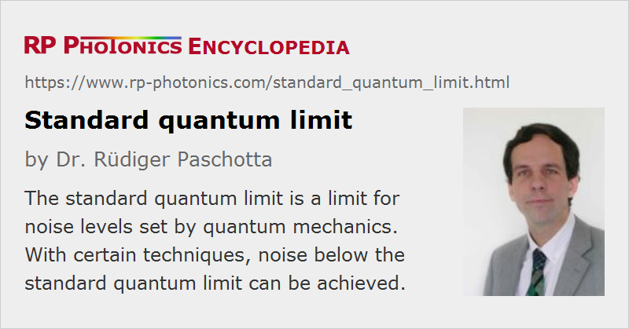

Standard Quantum Limit
Acronym: SQL
Definition: a limit for noise levels set by quantum mechanics
German: Standard-Quantenlimit
Categories: quantum optics, fluctuations and noise
How to cite the article; suggest additional literature
Author: Dr. Rüdiger Paschotta
The standard quantum limit for the noise of some optical measurement scheme usually refers to the minimum level of quantum noise which can be obtained without the use of squeezed states of light. Some examples are:
- The standard quantum limit for high-frequency intensity noise of a laser is the shot noise limit, and a lower intensity noise level can be obtained only with amplitude-squeezed light.
- There is also a standard quantum limit for phase noise, which is reached by a laser only at high noise frequencies.
- The sensitivity of various optical measurements, e.g. of length measurements with interferometers [2], has a standard quantum limit.
- The same applies to certain correlations e.g. of intensity noise between two optical beams.
Questions and Comments from Users
Here you can submit questions and comments. As far as they get accepted by the author, they will appear above this paragraph together with the author’s answer. The author will decide on acceptance based on certain criteria. Essentially, the issue must be of sufficiently broad interest.
Please do not enter personal data here; we would otherwise delete it soon. (See also our privacy declaration.) If you wish to receive personal feedback or consultancy from the author, please contact him e.g. via e-mail.
By submitting the information, you give your consent to the potential publication of your inputs on our website according to our rules. (If you later retract your consent, we will delete those inputs.) As your inputs are first reviewed by the author, they may be published with some delay.
Bibliography
| [1] | C. M. Caves, “Quantum-mechanical radiation-pressure fluctuations in an interferometer”, Phys. Rev. Lett. 45 (2), 75 (1980), doi:10.1103/PhysRevLett.45.75 |
| [2] | M. T. Jaekel and S. Reynaud, “Quantum limits in interferometric measurements”, Europhys. Lett. 13, 301 (1990), doi:10.1209/0295-5075/13/4/003 |
| [3] | H. M. Wiseman, “Light amplification without stimulated emission: beyond the standard quantum limit to the laser linewidth”, Phys. Rev. A 60 (5), 4083 (1999), doi:10.1103/PhysRevA.60.4083 |
| [4] | V. Giovannetti et al., “Quantum-enhanced measurements: beating the standard quantum limit”, Science 306 (5700), 1330 (2004), doi:10.1126/science.1104149 |
See also: quantum noise, squeezed states of light, shot noise
and other articles in the categories quantum optics, fluctuations and noise
|  |
If you like this page, please share the link with your friends and colleagues, e.g. via social media:
These sharing buttons are implemented in a privacy-friendly way!